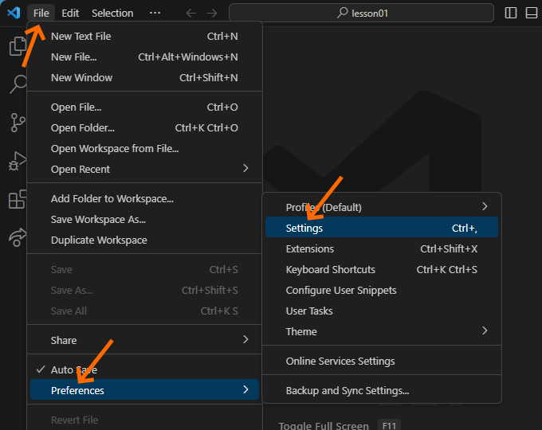
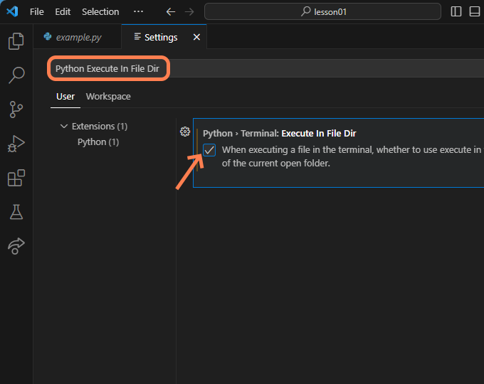

Each student in CSE 111 must install and use three pieces of
free software which are:
The Python Programming Language version 3.13
Visual Studio Code (also known as VS Code)
The Microsoft Python extension in VS Code
If you recently completed CSE 110, it is possible that you
already have all three pieces of software installed on your
computer. Watch these three videos from Microsoft that explain a bit
about Python, Visual Studio Code, and the Microsoft Python extension
in VS Code.
If your computer doesn’t have Python, VS Code, and the Python
extension for VS Code already installed, follow these steps to
install the software:
Download and install the latest stable version of
Python 3.13 from the python.org Downloads page. As of April
2025, the latest stable version of Python 3.13 is Python 3.13.3.
Download and save the Python 3.13 installer for your
operating system.
Do not install Python from within VS
Code or from the Microsoft Store or using Anaconda or
homebrew. Download and install Python from the link given in
step a above.
Double click the file that you downloaded to
start installing Python.
On the first screen of the installer, be certain
to check both boxes: “Install launcher...” and “Add Python
3.13 to PATH” as shown in this screen shot:
Click the “Install Now” link and Python will be
installed on your computer.
Create a folder named cse111 on your
computer where you will store all the programs that you
write for CSE 111.
Download and save this
sample Python file into the
folder that you created.
Install the Microsoft Python extension in VS Code.
Run VS Code on your computer.
In VS Code, open the sample Python file that you
downloaded.
In the lower right corner of VS Code, a small
dialog will open that says, “The 'Python' extension is
recommended for this file type.”
Click the “Install” button in that
dialog.
Execute the sample Python program.
Execute the sample Python file that you downloaded
by clicking the run icon in the upper right corner of VS
Code. The run icon is a green triangle
( or
).
The sample file should run without errors, and its
output should be similar to this:
Hello! What is your name? Amelia
3
2
1
Welcome to CSE 111, Amelia!
In VS Code, enable the “Python Terminal Execute in File
Dir” setting.
If your computer is running Microsoft
Windows, click the VS Code File menu, then
“Preferences”, then “Settings”.

or
If your computer is running Mac OS, click the
“Code” menu, then “Settings...”, then “Settings”.
In the “Search settings” box, enter “Python
Execute In File Dir” and then check the checkbox on the
left of the option “Python > Terminal: Execute In
File Dir”

Summary
To prepare your computer so that you can develop Python programs
in CSE 111, you should have done the following:
Install the Python programming language version
3.13
Create a folder named cse111 where you
will save your Python programs
Install a text editor named Visual Studio Code
Install the Microsoft Python extension inside VS
Code
In VS Code, enable the “Execute in File Dir”
option
Download and run a sample Python program to ensure your
computer is ready

 or
or
 ).
).